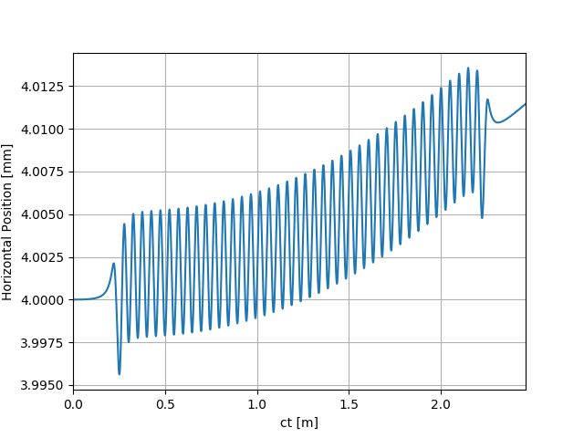
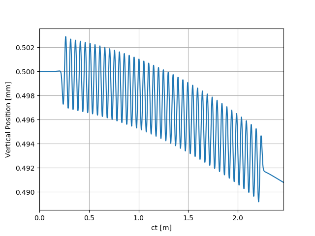

Note
Click here to download the full example code
SRW Example #1¶
Problem¶
Calculating electron trajectory in 3D magnetic field of an APPLE-II undulator
Example Solution¶
- 
- 
Out:
SRWLIB Python Example # 1:
Calculating electron trajectory in 3D magnetic field of an APPLE-II undulator
Reading magnetic field data from files ... done
Performing calculation ... done
Saving trajectory data to a file ... done
Plotting the results (blocks script execution; close any graph windows to proceed) ... Saving figures to uti_plot-{}.png
done
from __future__ import print_function #Python 2.7 compatibility
from srwpy.srwlib import *
from srwpy.uti_plot import *
import os
print('SRWLIB Python Example # 1:')
print('Calculating electron trajectory in 3D magnetic field of an APPLE-II undulator')
#**********************Input Parameters:
strExDataFolderName = 'data_example_01' #example data sub-folder name
#arFldInFileNames = ['epu49term1.dat', 'epu49cen.dat', 'epu49term2.dat'] #3D Magnetic Field data file names
arFldInFileNames = ['epu49HEtot.dat'] #3D Magnetic Field data file names
strTrajOutFileName = 'ex01_res_traj_off.dat' #file name for output trajectory data
numPer = 40 #Number of ID Periods (without counting for terminations)
xcID = 0 #Transverse Coordinates of ID Center [m]
ycID = 0
zcID = 0 #Longitudinal Coordinate of ID Center [m]
part = SRWLParticle()
part.x = 0.004 #Initial Transverse Coordinates (initial Longitudinal Coordinate will be defined later on) [m]
part.y = 0.0005
part.xp = 0 #Initial Transverse Velocities
part.yp = 0
part.gamma = 3/0.51099890221e-03 #Relative Energy
part.relE0 = 1 #Electron Rest Mass
part.nq = -1 #Electron Charge
npTraj = 10001 #Number of Points for Trajectory calculation
fieldInterpMeth = 4 #2 #Magnetic Field Interpolation Method, to be entered into 3D field structures below (to be used e.g. for trajectory calculation):
#1- bi-linear (3D), 2- bi-quadratic (3D), 3- bi-cubic (3D), 4- 1D cubic spline (longitudinal) + 2D bi-cubic
arPrecPar = [1] #General Precision parameters for Trajectory calculation:
#[0]: integration method No:
#1- fourth-order Runge-Kutta (precision is driven by number of points)
#2- fifth-order Runge-Kutta
#[1],[2],[3],[4],[5]: absolute precision values for X[m],X'[rad],Y[m],Y'[rad],Z[m] (yet to be tested!!) - to be taken into account only for R-K fifth order or higher
#[6]: tolerance (default = 1) for R-K fifth order or higher
#[7]: max. number of auto-steps for R-K fifth order or higher (default = 5000)
#**********************Auxiliary function to read tabulated 3D Magnetic Field data from ASCII file:
def AuxReadInMagFld3D(filePath, sCom):
f = open(filePath, 'r')
f.readline() #1st line: just pass
xStart = float(f.readline().split(sCom, 2)[1]) #2nd line: initial X position [m]; it will not actually be used
xStep = float(f.readline().split(sCom, 2)[1]) #3rd line: step vs X [m]
xNp = int(f.readline().split(sCom, 2)[1]) #4th line: number of points vs X
yStart = float(f.readline().split(sCom, 2)[1]) #5th line: initial Y position [m]; it will not actually be used
yStep = float(f.readline().split(sCom, 2)[1]) #6th line: step vs Y [m]
yNp = int(f.readline().split(sCom, 2)[1]) #7th line: number of points vs Y
zStart = float(f.readline().split(sCom, 2)[1]) #8th line: initial Z position [m]; it will not actually be used
zStep = float(f.readline().split(sCom, 2)[1]) #9th line: step vs Z [m]
zNp = int(f.readline().split(sCom, 2)[1]) #10th line: number of points vs Z
totNp = xNp*yNp*zNp
locArBx = array('d', [0]*totNp)
locArBy = array('d', [0]*totNp)
locArBz = array('d', [0]*totNp)
for i in range(totNp):
curLineParts = f.readline().split('\t')
locArBx[i] = float(curLineParts[0])
locArBy[i] = float(curLineParts[1])
locArBz[i] = float(curLineParts[2])
f.close()
xRange = xStep
if xNp > 1: xRange = (xNp - 1)*xStep
yRange = yStep
if yNp > 1: yRange = (yNp - 1)*yStep
zRange = zStep
if zNp > 1: zRange = (zNp - 1)*zStep
return SRWLMagFld3D(locArBx, locArBy, locArBz, xNp, yNp, zNp, xRange, yRange, zRange, 1)
#**********************Defining Magnetic Field:
magFldCnt = SRWLMagFldC() #Container
#magFldCnt.allocate(3) #Magnetic Field consists of 3 parts
magFldCnt.allocate(1) #Magnetic Field consists of 1 part
print(' Reading magnetic field data from files ... ', end='')
#for i in range(3):
for i in range(1):
filePath = os.path.join(os.getcwd(), strExDataFolderName, arFldInFileNames[i])
magFldCnt.arMagFld[i] = AuxReadInMagFld3D(filePath, '#')
magFldCnt.arMagFld[i].interp = fieldInterpMeth
magFldCnt.arXc[i] = xcID
magFldCnt.arYc[i] = ycID
print('done')
#magFldCnt.arMagFld[1].nRep = numPer #Central part of ID
magFldCnt.arMagFld[0].nRep = 1 #Central part of ID
#per = magFldCnt.arMagFld[1].rz #Period length
#magFldCnt.arZc = array('d', [zcID - 0.5*numPer*per - 0.5*(magFldCnt.arMagFld[0].rz), zcID, zcID + 0.5*numPer*per + 0.5*(magFldCnt.arMagFld[2].rz)])
#part.z = zcID - (0.5*numPer + 1)*per - magFldCnt.arMagFld[0].rz #Initial Longitudinal Coordinate (set before the ID)
magFldCnt.arZc[0] = zcID
part.z = zcID - 0.5*magFldCnt.arMagFld[0].rz
#**********************Trajectory structure, where the results will be stored
partTraj = SRWLPrtTrj()
partTraj.partInitCond = part
#partTraj.allocate(npTraj)
partTraj.allocate(npTraj, True)
partTraj.ctStart = 0 #Start Time for the calculation
#partTraj.ctEnd = (numPer + 2)*per + magFldCnt.arMagFld[0].rz + magFldCnt.arMagFld[2].rz #End Time
partTraj.ctEnd = magFldCnt.arMagFld[0].rz
#**********************Calculation (SRWLIB function call)
print(' Performing calculation ... ', end='')
partTraj = srwl.CalcPartTraj(partTraj, magFldCnt, arPrecPar)
print('done')
#**********************Saving results to a file
print(' Saving trajectory data to a file ... ', end='')
partTraj.save_ascii(os.path.join(os.getcwd(), strExDataFolderName, strTrajOutFileName))
print('done')
#**********************Plotting results
print(' Plotting the results (blocks script execution; close any graph windows to proceed) ... ', end='')
ctMesh = [partTraj.ctStart, partTraj.ctEnd, partTraj.np]
for i in range(partTraj.np):
partTraj.arX[i] *= 1000
partTraj.arY[i] *= 1000
uti_plot1d(partTraj.arX, ctMesh, ['ct [m]', 'Horizontal Position [mm]'])
uti_plot1d(partTraj.arY, ctMesh, ['ct [m]', 'Vertical Position [mm]'])
uti_plot_show() #show all graphs (and block execution)
print('done')
Total running time of the script: ( 0 minutes 1.393 seconds)